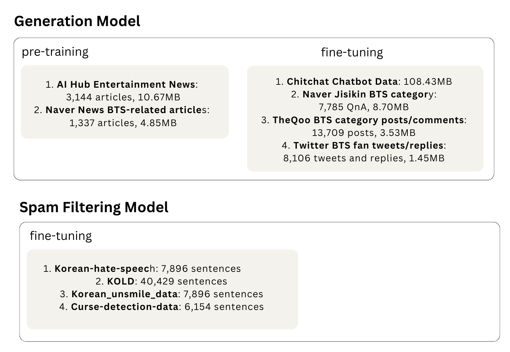
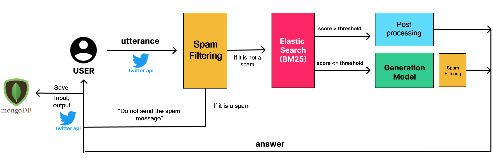

BTS Twitter Chatbot
January 9, 2023 - February 9, 2023
Twitter-based chatbot service for BTS fans, offering interactive Q&A and engaging chitchat experiences

[Project Description]
Let's fangirl together! ArmyBot is a chatbot service that allows you to have various conversations like a typical BTS fan friend on Twitter.
Just tweet @armybot_13 with your questions or any chit chats, and ArmyBot will reply to you.
Let's fangirl together! ArmyBot is a chatbot service that allows you to have various conversations like a typical BTS fan friend on Twitter.
Just tweet @armybot_13 with your questions or any chit chats, and ArmyBot will reply to you.
[Dataset]
Data is collected to train Generation Model and Spam Filtering Model.
Data is collected to train Generation Model and Spam Filtering Model.

[System Architecture]

- User tags the bot account and writes a tweet.
- Spam tweet filtering:
- If a tweet is determined to be malicious, a predefined response is returned.
- Intent keyword matching and BM25-based Elastic Search:
- If the retrieved reply has a BM25 score above a threshold and matches the intent keywords, the reply is post-processed and returned to the user.
- If the above two conditions are not satisfied, the input is passed to the Generation model, and the generated result is filtered for offensive expressions before being returned to the user.
- Input/output analysis and other information are stored in MongoDB for analysis.
[Modeling]
- Generation model
- It is pre-trained and fin-tuned based on paust/pko-t5-base.
- For pre-training, BTS-related tokens are added.
- Model size is 1.1GB and the number of trainable parameters is 275,617,536.
- Retreiver model
- Elastic Search with BM25 is used.
- Spam filtering model
- klue/bert-base based model is fine-tuned.